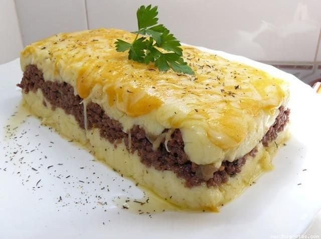

Pastel de papa

Una receta sencilla y con personalidad propia para empezar el año bien alimentados. El pastel de papas, un clásico de los hogares argentinos, es a la vez un plato muy popular y difícil de conseguir en restaurantes.
Ingredientes
- Carne picada de ternera 500 gramos
- Cebolla Picada 1
- Aceitunas verdes sin carozo 80 gramos
- Aceite de oliva 2 cucharadas.
- Pimentón dulce a gusto.
- Tomate triturado 1/2 taza.
- Papas 1 kilo y medio.
- Leche 120 ml.
Pasos
- En una sartén grande rehogar la cebolla junto al aceite de oliva, agregar la carne picada removiendo de vez en cuando, una vez cocida la carne agregar el tomate triturado, la sal, la pimienta, las aceitunas cortadas y el pimentón.
- Por otro lado cocer las papas (Yo las hice al vapor) pero también puedes hervirlas.
- Una vez las papas estén listas haremos un puré al que le agregaremos la manteca y la leche para lograr que nos quede cremoso, salpimentar a gusto así como también añadiremos la nuez moscada rallada.
- En una fuente para horno dispondremos una capa de puré, a continuación esparciremos la carne picada y el ciboulette picadito fino, finalmente cubriremos con el resto del puré.
- Llevaremos el pastel de papas a horno 180 grados durante 10 – 15 minutos aproximadamente hasta que la parte superior nos quede de un agradable color dorado.